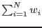

| Parameter | Mand | Type | Default | Constraints |
| imagesets | yes | dataset list | | |
List of  input images to be summed. They must all have the same pixel dimensions. input images to be summed. They must all have the same pixel dimensions.
|
| outimageset | no | dataset | outimage.ds | |
The output image, equal to
 imagesets.
|
| tempset | no | dataset | tempimage.ds | |
Name of a temporary image dataset (for pipeline use).
|
| calculateweights | no | bool | no | |
If this parameter = `no', the input images are simply summed, and neither background maps or exposure maps are required inputs. Contrariwise for `yes'.
|
| bkgmapsets | yes | dataset list | | |
List of background maps to be summed. They must all have the same pixel dimensions as the imagesets, and there must be the same number of members in each list. Each background map should correspond with the image at the same place in the respective list. This parameter is only read if calculateweights=`yes'.
|
| outbkgmapset | no | dataset | outbkgmap.ds | |
The output background map, equal to
bkgmapsets. This parameter is only read if calculateweights=`yes'.
|
| expmapsets | yes | dataset list | | |
List of exposure maps to be summed. They must all have the same pixel dimensions as the imagesets, and there must be the same number of members in each list. Each exposure map should correspond with the image at the same place in the respective list. This parameter is only read if calculateweights=`yes'.
|
| outexpmapset | no | dataset | outexpmap.ds | |
The output exposure map, equal to
expmapsets. This parameter is only read if calculateweights=`yes'.
|
| withrelsrcrates | no | bool | no | |
Whether to read the relative source-count expectation values (`source spectrum') from parameter relsrcrates. If withrelsrcrates=`no', these relative rates are all set to 1. This parameter is only read if calculateweights=`yes'.
|
| relsrcrates | yes | real list | 1.0 |  relsrcrates relsrcrates |
This parameter is read if calculateweights=`yes' and withrelsrcrates=`yes'.
|
| likemin | no | real | 10.0 | likemin |
The cutoff value of likelihood.
|
| Parameter | Mand | Type | Default | Constraints |